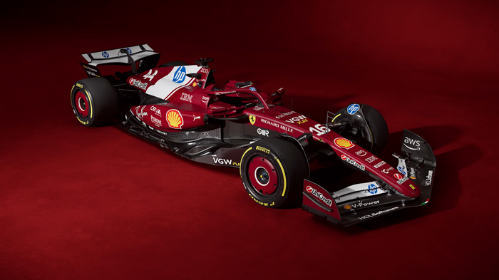
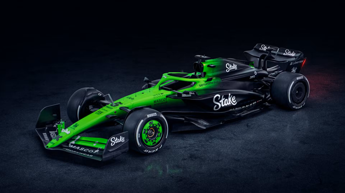

Domů
Závodní okruhy
Týmy
Formule 2
Vlastní zkušenosti
Williams Racing
Williams Racing je britský tým se sídlem v Grove v Oxfordshirde. Šéf týmu je James Vowles. Vyhráli 114 závodů. Na startovní rošt se postavili jako první celkem 128. Na pódium vystopali celkem 244.

Ferrari
Scuderia Ferrari je italský tým se sídlem v Maranello v provincii Modena. Šéf týmu je Frédéric Vasseur. Vyhráli 249 závodů. Na startovní rošt se postavili jako první celkem 254. Na pódium vystopali celkem 639.

Kick Sauber
Stake Kick Sauber je švýcarský tým se sídlem v Hinwil v kantonu Curych. Šéf týmu je Jonathn Wheatley. Vyhráli 1 závod. Na startovní rošt se postavili jako první jen jednou. Na pódium vystopali celkem 27.
